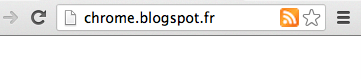

Page actions are a simple way to represent actions that can be taken on a page ("Email this page", "Share with Facebook", etc).
Page actions are displayed as icons on the right side of the OmniBox. The RSS icon in the following screenshot represents a page action that lets you subscribe to the RSS feed for the current page.
Page action icons can be up to 19px square. Larger icons will be resized to fit, but for best results, using a 19px icon is recommended.
Icons can be set two ways: using a static image or using the HTML5 canvas element. Using static images is easier for simple applications, but you can do more dynamic UIs using the canvas element.
Static images can be in any format WebKit can display. These include: png, bmp, ico, jpg, gif.
For the best visual impact, we recommend observing the following guidelines:
Developers can declare page actions in the manifest using the following syntax:
"page_action": {
"default_title": "Do action", // Optional, tooltip.
"default_icon": "icons/foo.png" // Optional, icon.
}
Note: Even if you don't include any of the values, you must include an empty page_action entry in your manifest so that the system knows to reserve space for your action in the omnibox.